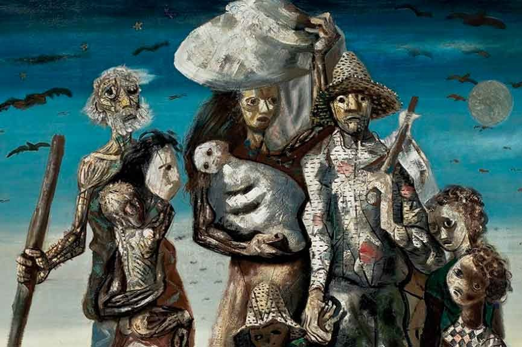
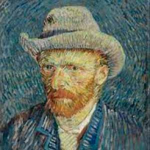

Texto sobre expressionismo.
Origem do Expressionismo
O Expressionismo foi um movimento artístico que surgiu em 1905 na Alemanha, por isso é chamado também de Expressionismo alemão. Com esse movimento os artistas conseguiram expressar os sentimentos humanos, por isso as obras desses movimentos são mais intensas, proporcionando ao espectador uma reflexão do que está sendo retratada na obra.
Expressionismo no Brasil
Ao contrário de outras manifestações artísticas, a pintura brasileira do 'Expressionismo no Brasil' se popularizou na década de 1970. Dessa forma, suas origens podem ser datadas entre 1907 e 1922. Ele influenciou a arte através dos estudos sobre o comportamento humano. As pinturas brasileiras foram marcadas principalmente pela crítica social da época. Cândido Portinari é um dos representantes do expressionismo no Brasil, ele representou intensamente em suas obras o sofrimento do povo nordestino, como, por exemplo na obra "Os retirantes".
As principais características do Expressionismo
- Uso de cores intensas.
- Foco em aspectos subjetivos, ou seja, que reflete a percepção, os sentimentos e as emoções do autor sobre o assunto da obra.
- Valorização do universo psicológico, especialmente os sentimentos abundantes como angústia e solidão.
- Valorização de temas trágicos e sombrios.
- Deformação das formas.
- Uso da tridimensionalidade em suas obras.
Principal representante do Expressionismo
Van Gogh
Vicent Van Gogh (1853-1890) foi um pintor holandês do século XIX e um dos principais representantes do expressionismo mundialmente. Com seu estilo único, já manifestava, através da sua arte, os principais sinais do expressionismo e por esse motivo é considerado um de seus anunciadores. Ele foi um homem intenso, que usava a arte como ferramenta de sobrevivência em meio a uma agitada e instável saúde psicológica e emocional. É considerado um verdadeiro gênio da pintura. Teve uma carreira relativamente curta como pintor, cerca de 10 anos, mesmo assim produziu uma enorme quantidade de telas. Seu legado é tão simbólico que, em 1973, em Amsterdã, na Holanda, foi criado um museu para abrigar suas criações.